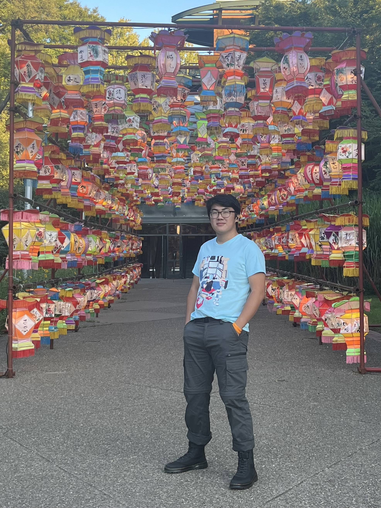

<!DOCTYPE html>
<html lang="en">
<head>
    <meta charset="UTF-8">
    <meta http-equiv="X-UA-Compatible" content="IE=edge">
    <meta name="viewport" content="width=device-width, initial-scale=1.0">
    <title>Document</title>
    <link rel="stylesheet" href="main page.css">
</head>
<body>
    
</body>
</html>
<link href='https://fonts.googleapis.com/css?family=Playfair Display' rel='stylesheet'>

<h1>Hi, my name is Thomas Wang

</h1>

<p></p>
<body>I am currently a second year at Drexel University studying User Experience and Interface Design.  Some things I enjoy are art, snowboarding and anime.</body>
<p></p>
<h2>Some of my work</h2>
<video width="320" height="240" autoplay>
    <source src="images/IDM-213-002-tw864-anim-001.mp4" type="video/mp4">
    <source src="images/movie.ogg" type="video/ogg">
  Your browser does not support the video tag.
  </video>
  <p></p>
This is a video that I made for my Interactive Digital Media as my final.
We had to take an app with design flaws and recreate it and improve upon its design.
Almost every asset seen in the video is of my design with the exception of the photos.
<p></p>

<p></p>
In this project I created several unique patterns and inserted them into a portrait of myself, we had to pose as a scene from a black and white movie of our choice, mine being Dr. Strangelove
